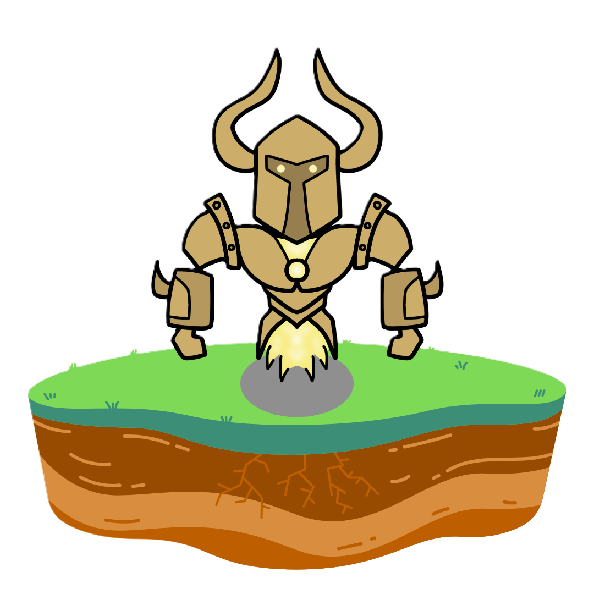

Bab 3 - Stay

Stay, kata yang sering kita ucap saat gud neg. Kata stay yang berarti "menetap" seperti SN yang selalu stay tidak akan berpaling tidak akan pindah dari rumah ternyaman yaitu rumah SN.
Sejauh kak de em hidup baru pertama kalinyaa stay sama nanay adalah stay ternyaman tidak ada stay yang paling nyaman selain stay with nanay.